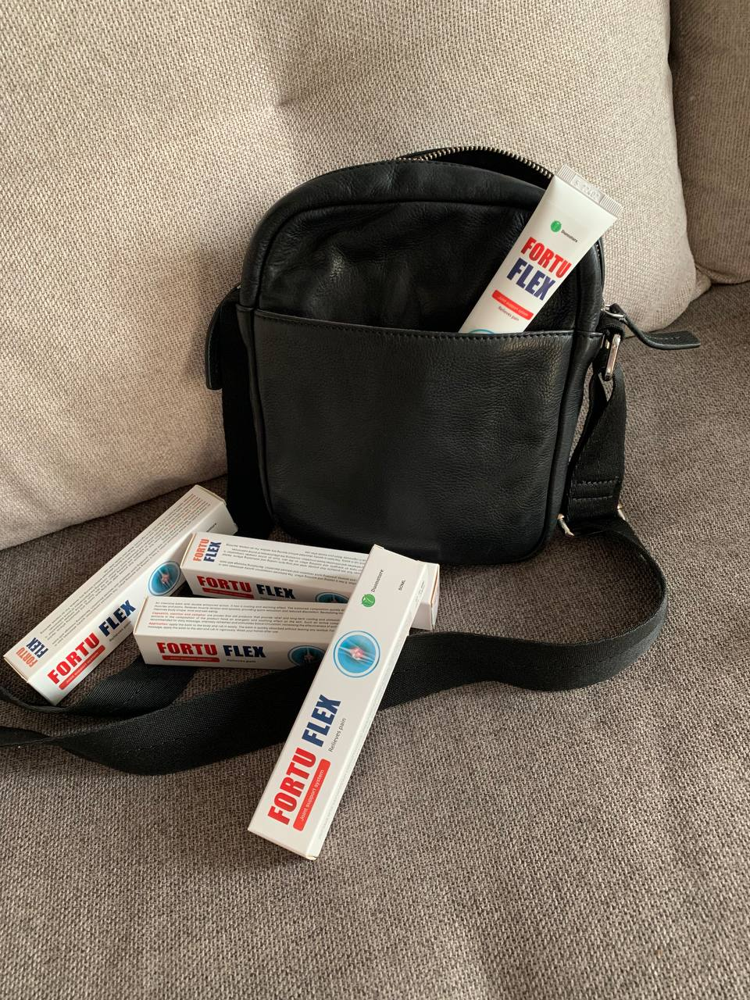

Articolazioni dolenti e rovinate? Il Prof. Enrico Castellacci ci parla della crema miracolosa Fortuflex!
Quante volte abbiamo sentito dire che le articolazioni e le ossa, con il passare del tempo, tendono a diventare sempre più deboli e non possono tornare a com’erano una volta?

Queste affermazioni erano vere fino a qualche tempo fa, fino a che un ricercatore cinese non ha scoperto una formula in grado di ridare giovinezza e vitalità a ossa e articolazioni. La Crema Fortuflex per Riparazione di Articolazioni e Ossa, secondo questo ricercatore, «distrugge le ossa e le articolazioni colpite e ne crea di nuove dalla vecchia cartilagine».

Nell’intervista di oggi con il Prof. Enrico Castellacci, specialista in ortopedia e traumatologia, andremo a esplorare come sia possibile alleviare qualsiasi dolore e curare tutte le malattie articolari e ossee, senza ricorrere a interventi chirurgici, procedure dolorose o farmaci dannosi e troppo costosi. Continua a leggere per scoprire di più su questa nuova crema antidolorifica.

Si è laureato in Medicina e Chirurgia presso l’Università di Pisa. Specialista in Ortopedia, in Fisiokinositerapia e in Medicina dello Sport, è primario ortopedico, Direttore del Dipartimento di Medicina e Traumatologia dello Sport presso l’ospedale di Lucca.
È Docente presso la Scuola di Specializzazione di Ortopedia e Traumatologia dell’Università di Siena, la Scuola di Specializzazione di Medicina dello Sport dell’Università di Chieti; e la Facoltà di Medicina dell’Università di Palermo.
È Presidente Nazionale dell’Associazione Medici del Calcio Italiani, Consulente Commissione Antidoping FIGC, Direttore della Sezione Medica del Settore Tecnico FIGC di Coverciano e Responsabile Medico della Nazionale di calcio dell’Italia campione del mondo nel 2006.
Autore di circa 250 pubblicazioni.

Camelio: «Siamo qui con il Prof. Enrico Castellacci, un esperto nel campo di tutto ciò che riguarda le articolazioni e le ossa. Volevamo partire con una domanda: è vero che le articolazioni con il passare degli anni tendono a deteriorarsi e non possono più essere curate?»
Castellacci: «Partiamo subito sfatando questa idea. Un ragazzo di 15 anni e un uomo di 70 hanno certamente ossa e articolazioni diverse.
Crescendo, le articolazioni e le ossa vanno a usurarsi e a rovinarsi, portando a tutta una serie di problemi e patologie che possono avere diverse conseguenze.

Questo però non significa che un anziano debba arrendersi al proprio destino e rassegnarsi ad avere problemi articolari che riducono notevolmente la qualità della vita.
La Crema Fortuflex per Riparazione di Articolazioni e Ossa è stata realizzata proprio con in mente un principio ben preciso: che le articolazioni possano essere ripristinate a qualsiasi età. Questo principio si basa sulle scoperte del ricercatore cinese Yuan Sun, e trovano le loro fondamenta nelle basi della medicina tradizionale cinese unite a quelle della medicina occidentale moderna.

Camelio: «A quali problemi possono portare le articolazioni doloranti o rotte?»
Castellacci: «I disturbi sono tantissimi. Vanno da problemi relativamente minori come semplice fastidio, lesioni, dolori alla sciatica, ma anche patologie più serie fra cui artrosi, artrite, osteoartrite e nei casi più gravi anche osteoporosi. Sono tutti disturbi molto seri che, se non vengono prevenuti e trattati, possono rendere la vita molto difficile».

Camelio: «Quali sono i sintomi a cui prestare attenzione per capire se le articolazioni non sono sane?»
Castellacci: «I sintomi sono molto chiari. Molto semplicemente, si prova dolore e disagio costante nella vita quotidiana. Ogni gesto che siamo abituati a fare, anche il più banale, come aprire un vasetto di marmellata o una penna, diventano delle vere e proprie imprese se sono presenti dei disturbi alle articolazioni».

Camelio: «Ci parli del segreto del recupero articolare con Fortuflex. Questa crema funziona davvero?»
Castellacci: «Lamentarsi senza far nulla non curerà i dolori e le malattie articolari. Ma cosa si può fare? L’opzione tradizionale è la chirurgia, che non solo è rischiosa e potrebbe non risolvere completamente i problemi, ma è anche molto costosa.

Fortunatamente, oggi non è più necessario ricorrere a un intervento chirurgico, grazie alla crema antidolorifica Fortuflex per Riparazione di Articolazioni e Ossa. La sua formula innovativa promuove la rigenerazione dei tessuti grazie al processo «RTT», che in un solo ciclo di utilizzo è in grado di curare completamente l’artrite, l’osteoartrite e l’osteoporosi e, cosa più importante, è in grado di alleviare i dolori articolare ripristinando ossa e articolazioni.

Oltre a tutto questo, la crema Fortuflex :
- elimina rapidamente dolore e infiammazione;
- ha un effetto rigenerante sul tessuto cartilagineo;
- migliora la mobilità delle articolazioni;
- aiuta a ridurre le infiammazioni e i gonfiori;
Il ricercatore Yuan Sun ha testato la sua formula su una donna anziana affetta da artrite, che aveva trascurato per tutta la vita e che le causava insopportabili sofferenze da più di 10 anni. Il ricercatore sostiene di averla completamente guarita dalla sua malattia e che, dopo il trattamento, la donna abbia dichiarato di sentirsi 30 anni più giovane e pronta a vivere nuovamente le sue giornate al massimo.

Oggi Fortuflex è raccomandato dall’80% degli specialisti in ortopedia, traumatologia e reumatologia di tutta Europa ed è perfetto per tutte le persone che hanno fastidi o dolori ad articolazioni e ossa e vogliono rigenerarle in modo facile e veloce. Con questa crema, si possono vedere i primi risultati e sentire la differenza già a partire dal secondo giorno».
Camelio: «Il professore, questa crema sembra davvero un prodotto miracoloso. A questo punto, sporge spontanea una domanda: quanto costa questa crema? E dove si può acquistare?»
Castellacci: «La crema Fortuflex è un’ottima alternativa alla chirurgia non solo perché meno invasiva, ma anche perché, in confronto, costa molto meno.
In questi tempi di crisi economica, tutti cerchiamo di risparmiare su ogni cosa, specialmente gli anziani con le loro pensioni che non gli permettono di acquistare farmaci troppo costosi. Non posso certamente permettermi di consigliare qualcosa che vada a prosciugare le tasche di chi compra.

La crema Fortuflex può essere ordinata con uno sconto del 50% direttamente dal produttore, attraverso una richiesta d'ordine.
Perciò non aspettate troppo e acquistate anche voi questa fantastica crema antidolorifica!»
Camelio: «Prof. Castellacci, grazie mille per averci rivelato il segreto».
Castellacci: «Grazie a voi! Spero sinceramente di poter aiutare molte persone e che i risultati qui riportati vi motivino a raggiungere questo grande obiettivo! Credete in voi stessi e riuscirete a curare questa difficile malattia!»

 DISCUSSIONE
DISCUSSIONE

Rosa Torelli
/ Casoria
È incredibile! Lei ha fatto un vero e proprio studio! Grazie per la ricetta, proverò il trattamento per le ginocchia. Non resta che aspettare che la promozione ricominci.

Magra Marco
/ Villafranca
La crema Fortuflex
è un ottimo trattamento per l'artrite! L'ho provato anch'io, anche se il mio medico mi ha sconsigliato di buttare via i soldi. Ora, anche lui ha notato i progressi ed è sorpreso.
Vantaggi:
Effetto rapido.
Svantaggi:
Non disponibile in farmacia.


Graziella Biasini
/ Borgosesia
Ho l'artrite alle anche, alle spalle, alle cervicali. Prendo pillole quando fa più male del solito. La crema Fortuflex è una novità, devo provarla, soprattutto se la paragono a quanto ho speso in analgesici.
Maurizio Turini
/ Roma
Cinque anni fa ho curato un'ulcera gastrica, sempre con estratti di CO2. Non ricordo il nome, ma mi sembra che sia lo stesso produttore... Vi farò sapere quando mi ricorderò il nome.
Maria di Leva
/ Chiari
Anche lavoro d'ufficio rovina la salute del corpo. Le ginocchia mi fanno male come se non ci fosse sangue. Spero che questa crema mi aiuti. È il mio terzo giorno.
Nessun dolore a riposo o quando si cammina, il che è positivo.

Giuseppe Zugno
/ Empoli
Grazie per le informazioni! Convivo con l'osteoartrite del ginocchio da 12 anni. Si manifesta in autunno e in primavera. Uso anche Fortuflex quando la situazione peggiora. Secondo me funziona benissimo. È necessario cambiare le mie medicine. È l'ultima generazione. Naturalmente sono costosi.

Barbara Gerice
/ Rosolini
Anch'io ho ordinato Fortuflex per mio marito, dopo una lunga ricerca di un prodotto adatto. Spero che sia d'aiuto... Capisco come mio marito stia soffrendo... Al freddo non riesce a stare seduto o a camminare... Me lo ha consigliato un reumatologo. Vediamo se funziona. In attesa della consegna!

Amato Giuseppa
/ Partinico
E' troppo costoso...

Sandra Orecchioni
/ Collepasso
Cara Giuseppa, se questo ti costa caro, allora credimi, da ex paziente artritico, significa che sei una persona sana e che non hai alcun dolore! Quando le mani fanno così male da non riuscire a tenere un cucchiaio e le lacrime scendono a fiotti, il costo della crema Fortuflex vi sembrerà un semplice centesimo! Allora sarete disposti a pagare qualsiasi cosa per fermare questa tortura, almeno per un po'. Questo è ciò che dico per esperienza personale. È meglio non lasciare che si arrivi a questo punto e, non appena ci si ammala, bisogna interrompere subito il problema. Non augurerei a nessuno quello che ho passato, l'osteoartrite è una cosa terribile.
Amato Giuseppa
/ Partinico
Beh, se è davvero utile, è un prezzo normalissimo, non c'è dubbio. Ma sarà utile? Ho un'osteocondrosi cervicale e a volte la mia testa si rompe per il dolore. So cos'è il dolore, non c'è bisogno di spiegarlo) La domanda è: la crema curerà il problema o no?
Sandra Orecchioni
/ Collepasso
Non posso dire nulla sull'osteocondrosi: non ne ho sofferto. Ma l'osteocondrosi è essenzialmente usura della cartilagine della colonna vertebrale + depositi di sale + nei casi avanzati, degradazione dell'osso vertebrale. E la crema Fortuflex è in grado di ripristinare tutto, quindi non vedo perché non provarla. Non capisco però i tuoi dubbi, se qualcuno mi avesse detto quando soffrivo di artrite: "C'è un sacco di robaccia là fuori, ti aiuterà! Mangialo!" Non avrei esitato, perché se c'è anche una minima possibilità, bisogna provarlo! E questo è un motivo in più per convincersi dell'efficacia del rimedio.
Amato Giuseppa
/ Partinico
Sono tutte stronzate! Non ci credo! Non si può mai curare l'artrite in un mese, le persone sono state trattate per anni con farmaci ed esercizi e i risultati sono stati peggiori!

Rita Tumminello
/ Vittoria
Che ci crediate o meno, è un vostro diritto, per carità. Posso parlare per me: la crema ha curato le mie ginocchia. Prima di questo, ho provato anche molte pomate, pillole e persino iniezioni, ma ho avuto pochissimi risultati! O non aiuta, o aiuta ma non a lungo. E dopo un ciclo di Fortuflex, da quattro anni non mi ricordo più dei dolori delle mie ginocchia! Lo consiglio e continuerò a consigliarlo a tutti!

Clara Galu
/ Civita Castellana
Sopra si chiedeva dell'osteocondrosi cervicale, ebbene, io l'ho curata. Sì, Fortuflex. E sì, in un mese. Anche un po' meno, perché ho ordinato solo 3 confezioni e non aveva bastato per un corso completo. Ma è un anno che il collo non mi dà più fastidio e i mal di testa sono ormai un ricordo del passato.

Federica Mariotti
/ Ponsacco
Per miracolo ho scoperto Fortuflex, non ricordo nemmeno come. Ho seguito un corso che, tra l'altro, costa quasi 4 volte meno del corso prescritto dal medico! Ora sono al terzo anno e l'artrite è sparita. Quindi, ragazzi, tirate le somme, trattatevi bene e sarete felici. È un peccato che non me l'abbiano data quando l'ho presa. Ma ancora una volta mi sono convinto che il rimedio è davvero di buona qualità.

Damiano Gravina
/
Alberona
Mia madre aveva un problema di lunga data con un'articolazione del braccio. Quando le ho comprato questa crema, mi ha guardato come se fossi pazzo. Sono riuscito ad attrarla grazie alla sua composizione naturale, senza sostanze chimiche. Ha iniziato ad utilizzare il prodotto due volte al giorno.
Stranamente, dopo solo un paio di giorni di utilizzo, il dolore iniziò gradualmente a diminuire e dopo un mese mia madre era in grado di piegare il braccio senza alcuna difficoltà. Nessun unguento ha mai funzionato in questo modo e lei ne ha provati tanti. In generale, possiamo dire che la crema funziona, ho ordinato altre 5 confezioni per lei sul sito web in modo che possa usarla costantemente e non far correre l'artrite. Infatti, se non vi prendete cura delle vostre articolazioni, potreste ritrovarvi in una situazione catastrofica.

Giulio Miracola
/ Grugliasco
In passato sono stato un atleta professionista, quindi ho subito molti infortuni. Di solito si trattava di piccole distorsioni o stiramenti, ma qualche anno fa mi sono infortunato gravemente al ginocchio. Per un po' ho dovuto persino camminare con una stampella. Nessun trattamento è servito a molto, ha solo alleviato il dolore temporaneamente. Poi, quando facevo attività fisica, il dolore diventava insopportabile; il ginocchio si gonfiava ed era doloroso persino camminare.
Di conseguenza, ho dovuto abbandonare lo sport. Prendevo antidolorifici più volte al giorno per alleviare il dolore.
La crema è stata ordinata da mia moglie, che aveva trovato informazioni al riguardo su un forum medico. Dopo un paio di giorni di utilizzo regolare, il dolore era notevolmente diminuito. Ero in grado di camminare senza alcun dolore. Una settimana dopo ho dimenticato gli antidolorifici. Io e mia moglie stiamo ristrutturando la casa e finora il ginocchio non mi ha dato alcun fastidio, nemmeno con lo sforzo. Per quanto riguarda il futuro, ho intenzione di tornare a fare sport, ma naturalmente dovrò fare più attenzione. Ogni tanto uso ancora il gel sul ginocchio, ma solo per precauzione. Ne ho ordinati altri due per mia moglie, in modo da poterli avere sempre a portata di mano quando ne ho bisogno.

Elisabetta Gaeta
/ Livorno
Quando mi è stata diagnosticata la radicolite, sono quasi scoppiata a piangere. Quale radicolite?! Ho solo 38 anni! Ma si scopre che è possibile e che l'età non ha nulla a che fare con questo... La crema Fortuflex ha riportato la mia schiena all'età di 16 anni. Grazie per avermi ricordato, mi sono appena ordinato un'altra crema, non sarà superflua come misura preventiva! Se siete interessati, c'è ancora della crema in vendita, ma ne è rimasta pochissima: al momento dell'ordine ne avevano solo 490 confezioni.

Buccolieri Maria
/ Verona
Grazie mille ragazzi! Mi avete dato la speranza che non tutto è perduto. Ho ordinato Fortuflex, non tarderò a scrivere ad Yan in merito ai risultati.